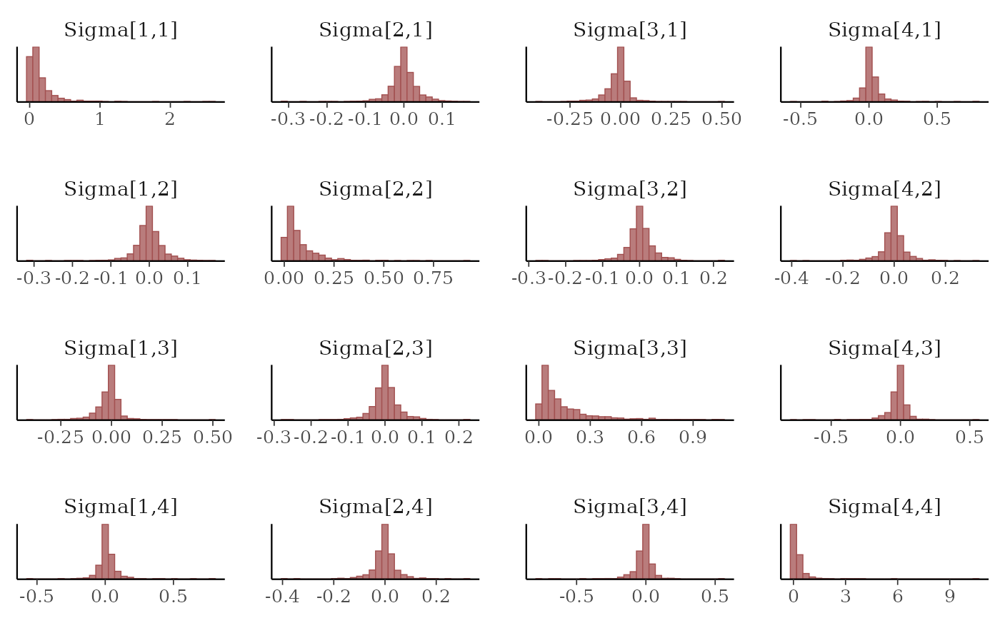
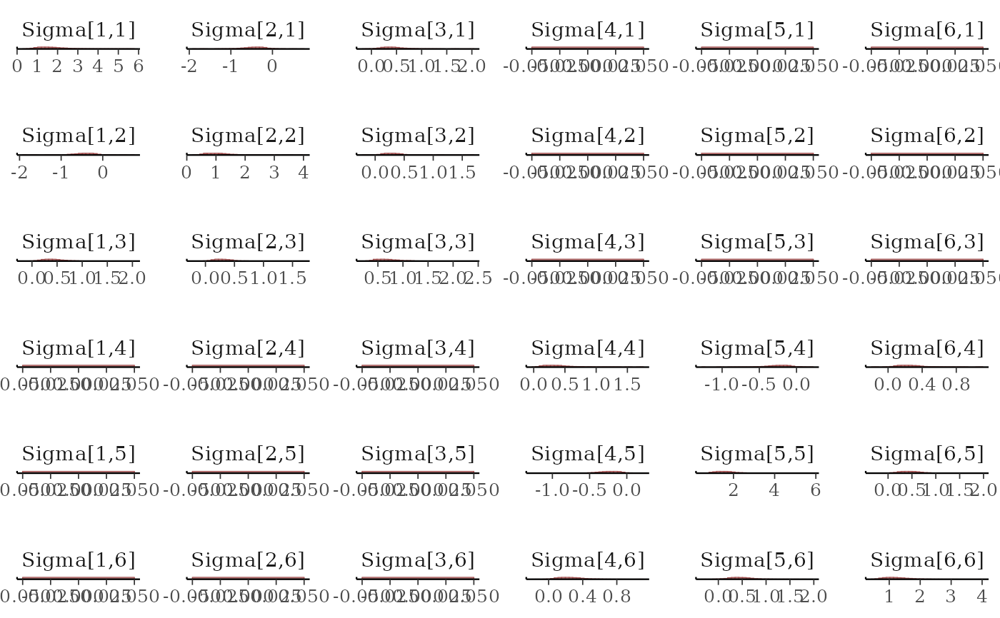

Set up latent correlated multivariate Gaussian residual processes in mvgam. This function does not evaluate its arguments – it exists purely to help set up a model with particular error processes
Arguments
- unit
The unquoted name of the variable that represents the unit of analysis in
dataover which latent residuals should be correlated. This variable should be either anumericorintegervariable in the supplieddata. Defaults totimeto be consistent with other functionalities in mvgam, though note that the data need not be time series in this case. See examples below for further details and explanations- gr
An optional grouping variable, which must be a
factorin the supplieddata, for setting up hierarchical residual correlation structures. If specified, this will automatically set up a model where the residual correlations for a specific level ofgrare modelled hierarchically:\(\Omega_{group} = p\Omega_{global} + (1 - p)\Omega_{group, local}\),
where \(\Omega_{global}\) is a global correlation matrix, \(\Omega_{group, local}\) is a local deviation correlation matrix, and \(p\) is a weighting parameter controlling how strongly the local correlation matrix \(\Omega_{group}\) is shrunk towards the global correlation matrix \(\Omega_{global}\). If
gris supplied thensubgrmust also be supplied- subgr
A subgrouping
factorvariable specifying which element indatarepresents the different observational units. Defaults toseriesto be consistent with other functionalities in mvgam, though note that the data need not be time series in this caseModels that use the hierarchical correlations (by supplying a value for
gr) should not include aserieselement indata. Rather, this element will be created internally based on the supplied variables forgrandsubgrFor example, if you are modelling counts for a group of species (labelled as
speciesin the data) across sampling sites (labelled assitein the data) in three different geographical regions (labelled asregion), and you would like the residuals to be correlated within regions, then you should specifyunit = site,gr = region, andsubgr = speciesInternally,
mvgam()will appropriately order the data byunit(in this case, bysite) and create theserieselement for the data using something like:series = as.factor(paste0(group, '_', subgroup))
Value
An object of class mvgam_trend, which contains a list of
arguments to be interpreted by the parsing functions in mvgam
Examples
# \donttest{
# Simulate counts of four species over ten sampling locations
site_dat <- data.frame(
site = rep(1:10, 4),
species = as.factor(sort(rep(letters[1:4], 10))),
y = c(NA, rpois(39, 3))
)
head(site_dat)
#> site species y
#> 1 1 a NA
#> 2 2 a 4
#> 3 3 a 4
#> 4 4 a 1
#> 5 5 a 1
#> 6 6 a 2
# Set up a correlated residual (i.e. Joint Species Distribution) model
trend_model <- ZMVN(unit = site, subgr = species)
mod <- mvgam(
y ~ species,
trend_model = ZMVN(unit = site, subgr = species),
data = site_dat,
chains = 2,
silent = 2
)
# Inspect the estimated species-species residual covariances
mcmc_plot(mod, variable = 'Sigma', regex = TRUE, type = 'hist')
#> `stat_bin()` using `bins = 30`. Pick better value with `binwidth`.

# A hierarchical correlation example
Sigma <- matrix(
c(1, -0.4, 0.5,
-0.4, 1, 0.3,
0.5, 0.3, 1),
byrow = TRUE,
nrow = 3
)
make_site_dat <- function(...) {
errors <- mgcv::rmvn(
n = 30,
mu = c(0.6, 0.8, 1.8),
V = Sigma
)
site_dat <- do.call(rbind, lapply(1:3, function(spec) {
data.frame(
y = rpois(30, lambda = exp(errors[, spec])),
species = paste0('species', spec),
site = 1:30
)
}))
site_dat
}
site_dat <- rbind(
make_site_dat() %>%
dplyr::mutate(group = 'group1'),
make_site_dat() %>%
dplyr::mutate(group = 'group2')
) %>%
dplyr::mutate(
species = as.factor(species),
group = as.factor(group)
)
# Fit the hierarchical correlated residual model
mod <- mvgam(
y ~ species,
trend_model = ZMVN(unit = site, gr = group, subgr = species),
data = site_dat
)
#> Compiling Stan program using cmdstanr
#>
#> Start sampling
#> Running MCMC with 4 chains, at most 3 in parallel...
#>
#> Chain 1 Iteration: 1 / 1000 [ 0%] (Warmup)
#> Chain 2 Iteration: 1 / 1000 [ 0%] (Warmup)
#> Chain 3 Iteration: 1 / 1000 [ 0%] (Warmup)
#> Chain 2 Iteration: 100 / 1000 [ 10%] (Warmup)
#> Chain 2 Iteration: 200 / 1000 [ 20%] (Warmup)
#> Chain 1 Iteration: 100 / 1000 [ 10%] (Warmup)
#> Chain 2 Iteration: 300 / 1000 [ 30%] (Warmup)
#> Chain 3 Iteration: 100 / 1000 [ 10%] (Warmup)
#> Chain 2 Iteration: 400 / 1000 [ 40%] (Warmup)
#> Chain 1 Iteration: 200 / 1000 [ 20%] (Warmup)
#> Chain 2 Iteration: 500 / 1000 [ 50%] (Warmup)
#> Chain 2 Iteration: 501 / 1000 [ 50%] (Sampling)
#> Chain 3 Iteration: 200 / 1000 [ 20%] (Warmup)
#> Chain 2 Iteration: 600 / 1000 [ 60%] (Sampling)
#> Chain 1 Iteration: 300 / 1000 [ 30%] (Warmup)
#> Chain 2 Iteration: 700 / 1000 [ 70%] (Sampling)
#> Chain 3 Iteration: 300 / 1000 [ 30%] (Warmup)
#> Chain 2 Iteration: 800 / 1000 [ 80%] (Sampling)
#> Chain 1 Iteration: 400 / 1000 [ 40%] (Warmup)
#> Chain 3 Iteration: 400 / 1000 [ 40%] (Warmup)
#> Chain 2 Iteration: 900 / 1000 [ 90%] (Sampling)
#> Chain 1 Iteration: 500 / 1000 [ 50%] (Warmup)
#> Chain 1 Iteration: 501 / 1000 [ 50%] (Sampling)
#> Chain 2 Iteration: 1000 / 1000 [100%] (Sampling)
#> Chain 3 Iteration: 500 / 1000 [ 50%] (Warmup)
#> Chain 3 Iteration: 501 / 1000 [ 50%] (Sampling)
#> Chain 2 finished in 2.4 seconds.
#> Chain 4 Iteration: 1 / 1000 [ 0%] (Warmup)
#> Chain 1 Iteration: 600 / 1000 [ 60%] (Sampling)
#> Chain 3 Iteration: 600 / 1000 [ 60%] (Sampling)
#> Chain 1 Iteration: 700 / 1000 [ 70%] (Sampling)
#> Chain 1 Iteration: 800 / 1000 [ 80%] (Sampling)
#> Chain 3 Iteration: 700 / 1000 [ 70%] (Sampling)
#> Chain 1 Iteration: 900 / 1000 [ 90%] (Sampling)
#> Chain 1 Iteration: 1000 / 1000 [100%] (Sampling)
#> Chain 1 finished in 3.5 seconds.
#> Chain 3 Iteration: 800 / 1000 [ 80%] (Sampling)
#> Chain 4 Iteration: 100 / 1000 [ 10%] (Warmup)
#> Chain 3 Iteration: 900 / 1000 [ 90%] (Sampling)
#> Chain 4 Iteration: 200 / 1000 [ 20%] (Warmup)
#> Chain 3 Iteration: 1000 / 1000 [100%] (Sampling)
#> Chain 4 Iteration: 300 / 1000 [ 30%] (Warmup)
#> Chain 3 finished in 4.0 seconds.
#> Chain 4 Iteration: 400 / 1000 [ 40%] (Warmup)
#> Chain 4 Iteration: 500 / 1000 [ 50%] (Warmup)
#> Chain 4 Iteration: 501 / 1000 [ 50%] (Sampling)
#> Chain 4 Iteration: 600 / 1000 [ 60%] (Sampling)
#> Chain 4 Iteration: 700 / 1000 [ 70%] (Sampling)
#> Chain 4 Iteration: 800 / 1000 [ 80%] (Sampling)
#> Chain 4 Iteration: 900 / 1000 [ 90%] (Sampling)
#> Chain 4 Iteration: 1000 / 1000 [100%] (Sampling)
#> Chain 4 finished in 3.0 seconds.
#>
#> All 4 chains finished successfully.
#> Mean chain execution time: 3.2 seconds.
#> Total execution time: 5.6 seconds.
#>
# Inspect the estimated species-species residual covariances
mcmc_plot(mod, variable = 'Sigma', regex = TRUE, type = 'hist')
#> `stat_bin()` using `bins = 30`. Pick better value with `binwidth`.

# }